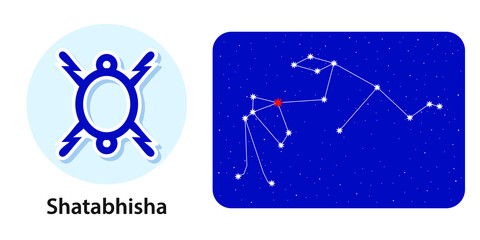

Nakshatra Shatabhishak
Shatabhishak Nakshatra
Characteristics male
The Male native of the Shatabhisha Nakshatra will not hesitate to sacrifice his self-interests to stand by his principles. His creed is self-service. He also follows religious rituals very sincerely. Since he is stubborn, once he makes a decision, he will stand firm on it. Though he is intelligent in most areas of life, he is very emotional. When provoked, he can blow his top off, but his anger is soon subdued too. He is not someone who flaunts his assets or talents, and is very modest in that way, though they soon get revealed through his words and actions.Profession male
The Male native of the Shatabhisha Nakshatra will face a torrid time till the age of 34, after which he will make steady progress in his profession or business. This native is suitable for the fields of astrology, psychology, reiki, and other healing arts. His literary smarts will come into the limelight while he is still young.Compatibility male
The Male native of the Shatabhisha Nakshatra has to face many problems, especially from his near and dear ones. Still, he does not avoid helping them when they need help. It has been observed that this native has to suffer most due to his brothers. His father also will not benefit him much. However, he will get ample love and affection from his mother. His married life may not be very smooth, even though his wife has all the good qualities expected of a housewife.Health male
The health of the Male native of the Shatabhisha Nakshatra will not be as good as it appears to be. His immunity will be poor because of which he will frequently catch infections. He is often troubled by urinary ailments, breathing trouble, and diabetes.Characteristics female
The Female native of the Shatabhisha Nakshatra will have a very calm nature. However, she can be hot-tempered when provoked. She is inclined towards religious rituals as she is god-fearing. She often gets involved in family quarrels leading to a lack of mental peace. She possesses a good memory and is sympathetic and generous.Profession female
The Female native of the Shatabhisha Nakshatra is inclined towards scientific study. It has been observed that most female doctors have been born in this Nakshatra.Compatibility female
The Female native of the Shatabhisha Nakshatra dotes on her husband, but her life is likely to be full of problems. The long separation from her husband is likely, or she may even become a widow at an early age.Health female
The health of this native will be a cause of concern. It has been observed that this native usually suffer from urinary and uterus disorders. She is also likely to be prone to colic troubles and chest pain.Shatabhishak Nakshatra Padas
1st Pada: The first pada of the Shatabhisha Nakshatra falls in the Sagittarius Navamsa ruled by Jupiter. These natives are casual, optimistic, and generous with a tendency to get cheated.
2nd Pada: The second pada of the Shatabhisha Nakshatra falls in the Capricorn Zodiac sign Navamsa ruled by Saturn. It is practical and methodical, but the native may become over-ambitious.
3rd Pada: The third pada of the Shatabhisha Nakshatra falls in the Aquarius Navamsa ruled by Saturn. The natives here are fat-sighted, although they can sometimes be hot-tempered, or eccentric.
4th Pada: The fourth pada of the Shatabhisha Nakshatra falls in the Pisces Navamsa ruled by Jupiter. The focus here is on compassion and healing. Negative planets can make the native addicted to intoxication.